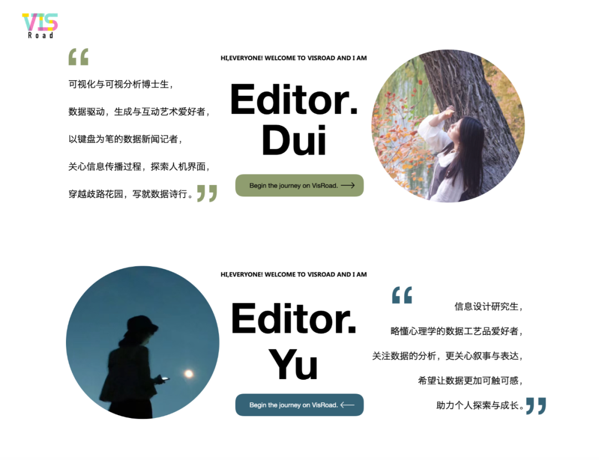

微斯人｜创刊寄语
Abstract
VisRoad began as a shared curiosity between two visualization enthusiasts who wanted to document, translate, and discuss the many ways data visualization connects with research, media, design, and everyday life. This opening note introduces the spirit of the project: a small but persistent attempt to gather useful resources, unpack visual stories, and create a warmer path for people who care about visualization.

编辑寄语
Dui 的寄语
这是微斯人的第一篇推送，它的由来，源自我们关于可视化的分享欲。
或许学术是孤独的苦旅，但 Dui 和 Yu，我们总在微信对话框里惊叹于一个又一个美丽的图像，讲一个又一个新鲜的 idea，画一个又一个或许还没办法实现的饼。这是一个珍贵的体验，从北京到爱丁堡，海洋上的孤岛们，一座向另一座传来遥远的回音。
我们互相激励，也有时解怠；我们常常兴奋，也总受挫沮丧。我们试图寻求一个地方，安放我们这一路的探索、受教、惊叹、创造。我们希望留下小小的经验，成为庞大数据库角落中可视化的一点线索；我们希望告诉后来者那些我们想一开始就被告知的事情；我们希望将可视化之美，那些我们被打动的瞬间也同样传达给你。
互联网是无数的任意门，如果你敲对了关键词，你就拥有了一把通向微斯人的钥匙。我们在关心同样的事情，我们同呼吸，共好奇。
微斯人，是一个想来有点好笑的谐音梗，却也敬走在可视化道路上的每个人，微斯人，吾谁与归。
Yu 的寄语
一切开始于 24 年 8 月底的一次聊天，Dui 和 Yu 相互分享了很多有趣的可视化项目以及学习资源。Dui 忽然提到：“最近开始有点想做可视化播客/自媒体之类的”。
于是经过了半个学期的酝酿，微斯人 VisRoad 正式启程！
我们设计了不同的栏目，比如：
- 学术指南：主要分享经典课程、学术论文和指南；
- 拆视觉：带你拆解可视化项目的制作过程和设计选择；
- 上新了：旨在传播、翻译和分析最新的讲座、会议等；
- 数绘生活：和你一同寻找、制作生活中的可视化；
- 微斯俱乐部：进行分享、安利与科普。
保持月更，敬请期待！